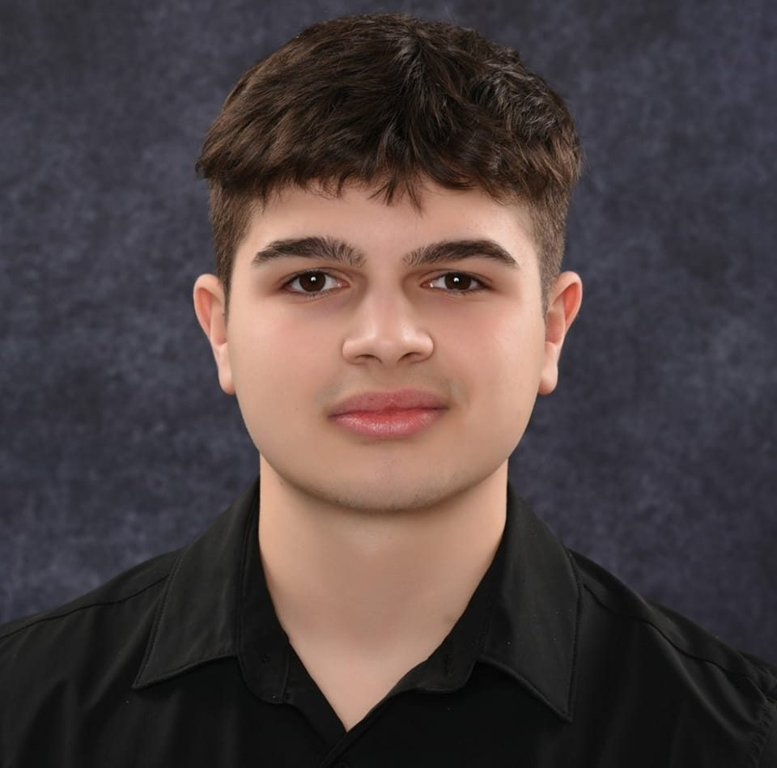

Биографија

Лука Василески
Здраво, јас сум Лука – студент на ФИНКИ, роден во градот Гостивар, и имам 20 години.
Се интересирам за многу различни работи и секогаш сакам да пробувам нешто ново. Во слободно време најчесто одам во теретана, патувам, играм компјутерски игри и програмирам – нешто што навистина ме исполнува.
Доколку сакате да дознаете повеќе за моите интереси, погледнете ја секцијата „Хобија“ на оваа страница.